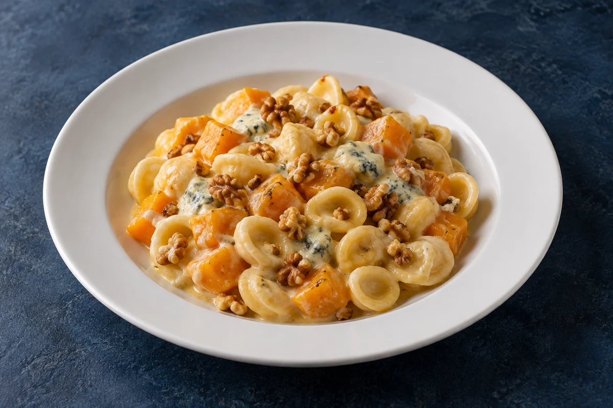
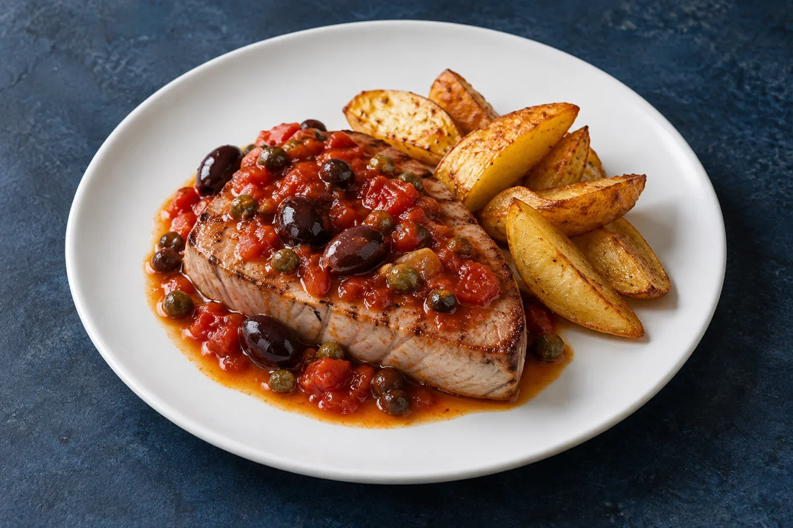
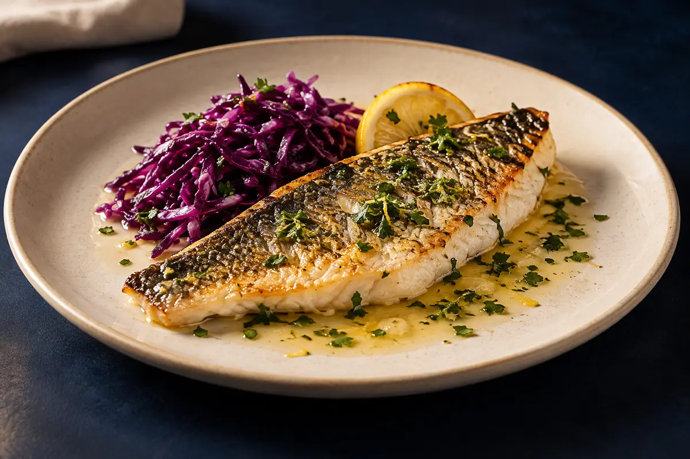

Bruschette con crema di zucca e speck croccante (2 pezzi)
Pane tostato con una spalmata di gorgonzola, crema di zucca vellutata e speck croccante.
0107
Valido solo a cena,
o a pranzo nei festivi
Pane tostato con una spalmata di gorgonzola, crema di zucca vellutata e speck croccante.
0107

Gamberetti* e delicata salsa rosa, su un letto di fresca insalata.
020310

Champignon dorati e croccanti, serviti con spicchi di limone.
0103

Cozze, vongole, gamberetti* e gamberone*, con un leggero pomodoro.
010214

Verdure di stagione, zafferano e guanciale croccante.
010709

Orecchiette fresche con la dolcezza della zucca, gorgonzola cremoso e noci.
010708

Melanzane morbide e bocconcini di tonno fresco, con poco pomodoro.
0104

Alici, calamari e gamberetti* in una frittura leggera e croccante.
01020414

Tonno rosso con pomodoro, olive e capperi, accompagnato da patate al forno.
04

Branzino alla griglia, limone e prezzemolo, con verza viola cruda.
04

Salmone alla griglia, arancia e pepe rosa, con finocchi crudi e aceto balsamico.
04
Coperto cena 1,50 € a persona. Prenotando tavolo e menù entro le 18:00, il coperto è omaggio.
Attendere la conferma del Ristorante per considerare valido l’ordine.
Le immagini dei piatti, pur realistiche, sono generate con intelligenza artificiale e hanno scopo illustrativo.